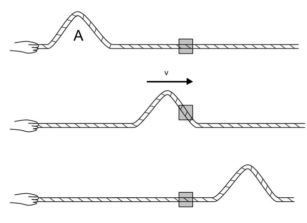
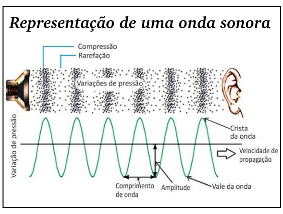
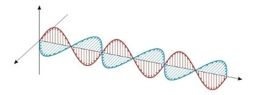
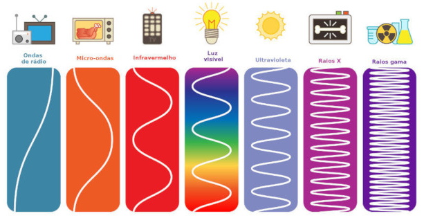
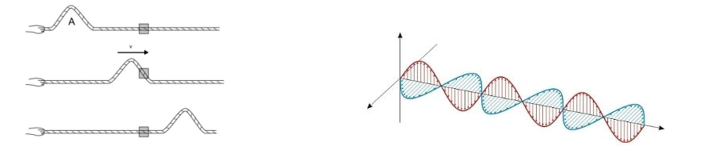
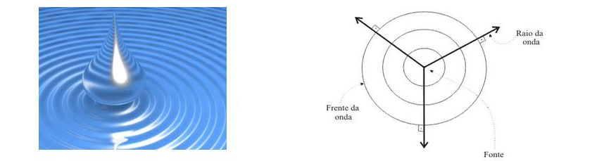
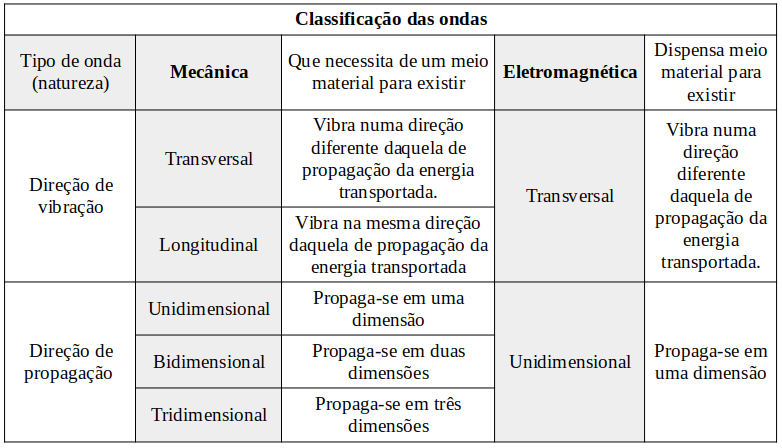

Ondas são perturbações que podem ocorrer no espaço, capazes de propagar energia sem que, com isso, haja propagação de matéria.
|
A figura ao lado ilustra um exemplo de onda. Observe que as partículas que compõem a corda se movem verticalmente, enquanto a energia que as faz mover-se se desloca horizontalmente. Ou seja, a energia é transportada, mas a matéria não. |
 |
Existem diversos tipos de ondas, e elas podem ser classificadas segundo alguns critérios.
Quanto à natureza, podemos classificar as ondas em duas categorias: ondas mecânicas e ondas eletromagnéticas.
Ondas mecânicas: São perturbações que ocorrem necessariamente em um meio material. Por isso, essas ondas não se propagam no espaço interplanetário (em sua maior parte tomado pelo vácuo). As ondas mecânicas podem ser de dois tipos:
➔ ONDAS MECÂNICAS TRANSVERSAIS: São aquelas em que a energia é transmitida fazendo a matéria que constitui o meio vibrar em direção perpendicular à de propagação. São exemplos de ondas transversais:
◦ A onda em uma corda;
◦ Ondas marítimas (marolas);
◦ Ondas sísmicas secundárias (do tipo S);
➔ ONDAS MECÂNICAS LONGITUDINAIS: São aquelas em que a energia transmitida faz a matéria vibrar na mesma direção de propagação. São exemplos de ondas longitudinais:
|
◦ Som: O som é a perturbação do ar captada e convertida em informações pelo nosso cérebro. Ao falarmos, por exemplo, realizamos movimentos musculares que provocam uma perturbação no ar; essa perturbação é transmitida longitudinalmente até provocar vibrações em terminações nervosas do nosso aparelho auditivo e, depois, o cérebro interpreta essas informações. |
 |
◦ Ondas sísmicas primárias (do tipo P);
◦ Alguns tipos de ondas que acontecem em molas.
Ondas eletromagnéticas: são perturbações em campos elétricos e magnéticos que transportam energia sem que haja transporte de matéria. Em breve, quando estudarmos eletricidade, aprenderemos que a variação de um campo magnético produz um campo elétrico, e vice-versa. Assim, ao fazer um campo elétrico variar, essa variação gera um campo magnético variável, que também fará surgir outro campo elétrico; essas ondas se propagam, mesmo no vácuo, como uma perturbação que se autoalimenta.
|
A imagem ao lado ilustra uma onda eletromagnética. Como é possível observar, o campo elétrico vibra horizontalmente, enquanto o campo magnético vibra verticalmente (ou seja, vibram em planos perpendiculares entre si). Enquanto isso, a energia se propaga num eixo perpendicular aos planos de vibração dos campos. |
 |
➔ Toda onda eletromagnética tem PROPAGAÇÃO TRANSVERSAL.
Existem, ao todo, 7 tipos de ondas eletromagnéticas, diferenciados e classificados de acordo com sua frequência de vibração.

Existem 3 maneiras de classificar uma onda quanto a esse critério.
Ondas unidimensionais: são aquelas que se propagam em uma única direção (portanto, ao longo de uma linha).

Ondas bidimensionais: são aquelas que se propagam em duas dimensões (portanto, num plano).

Ondas tridimensionais: são aquelas que se propagam em três dimensões (portanto, no espaço tridimensional).
